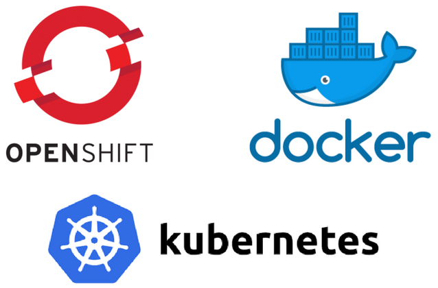

@sampaccoud
Technical debt
- One big team, not agile
- Recruitment is complicated
- Modifications hard to do on the whole system
- Hard to operate and scale
- It's a closed world doesn't work with other LMS, LRS, etc.
- It doesn't play well with mobile especially apps (games, chat,...)
- Each university has specific requirements
Grow the monster?
A portal for Open Education
github.com/openfun/richie
- Intertwined pages universities, courses, teachers and themes
- Advanced search full-text, multi-facetting, auto-complete
- Multi-lingual
- Front-end editing
- Access rights and publication workflow
- Flexible and extensible based on Django CMS

An LTI video provider
github.com/openfun/marsha
- Serverless encoding with Amazon AWS
- LTI authentication
- Adaptive Bit Rate DASH, HLS
- Multi-player Plyr, Opensource, Accessible and ABR
- xAPI analytics
- Subtitles, transcripts


A deployment tool for OpenShift
github.com/openfun/arnold
- Built on Ansible with k8s
- Blue/Green deployments with rollbacks
- Multi-customer, multi-environment
- App templates with flexible defaults / overrides
- Managing secrets with Ansible vault and PGP keys
- Automated SSL certificates with Let's Encrypt
üê≥ Docker images
| github.com/openfun/openshift-docker | Docker images adapted to OpenShift for related services (nginx, elasticsearch, etc.) |
| github.com/openfun/openedx-docker | Native Docker image of Open edX |
| github.com/openfun/richie | Native Docker image of Richie, a CMS for Open edX based on DjangoCMS |
| github.com/openfun/marsha | Native Docker image of Marsha, an LTI video provider |
Built on CircleCI and pushed to Docker Hub
üë∑
100% opensource
MIT licence
üçª
Contributions welcomeüôè Thank you!
üëä Get in touch:
üéì Open Source for Education